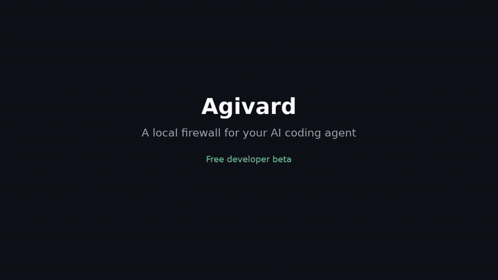
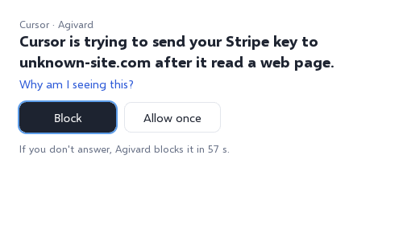
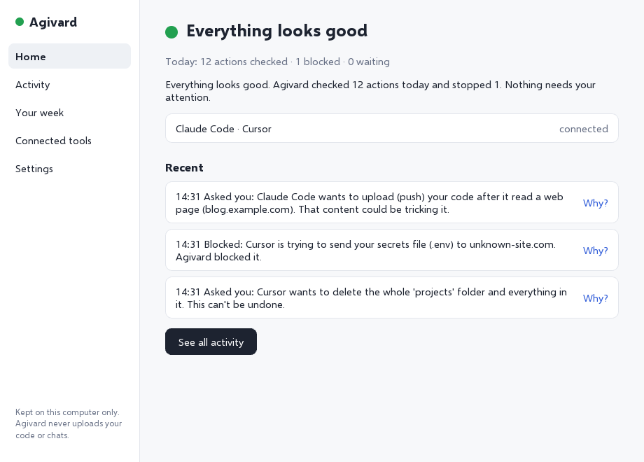

Wiping your project
Recursive deletes, cleans and formatters pointed at the wrong folder.
rm -rfgit clean -fdxfind -deleteAgivard is a local firewall between Cursor, Claude Code or Grok Bot and your computer. It reads every command before it runs, and stops the destructive ones in plain English.
This would permanently delete your project folder, including files that aren't in git.
rm -rf ~/projects/shop
Agivard stays quiet on everyday work and steps in only when a command could lose work, leak a secret, or install something fake.
Recursive deletes, cleans and formatters pointed at the wrong folder.
rm -rfgit clean -fdxfind -deleteForce-pushes and hard resets that throw away commits on shared branches.
git push --forcegit reset --hardAPI keys and .env files headed for a site you've never used.
Typosquats and brand-new, empty packages on npm, PyPI and crates.io.
MCP results that try to talk your agent into something unsafe.
Balanced mode lets builds, tests and edits straight through. In our test harness, a routine day of agent work raised no prompts at all.
If Agivard ever crashes, your AI tool keeps working. It never holds your agent hostage.
Download for your system and open Agivard. It lives in your menu bar or system tray.
One click for Cursor and Claude Code. An optional shell guard covers Grok Bot on Mac.
When something risky comes up, a short pop-up explains it in plain English. You decide.
A real recording: an agent tries git clean -fdx, Agivard asks first, and an ordinary command goes straight through.



Code-signing costs money, so the free beta isn't signed yet. Your system asks once; after that Agivard opens normally.
.dmg and drag Agivard onto Applications.xattr -dr com.apple.quarantine /Applications/Agivard.appagivard-windows-x86_64-setup.exe. It installs for your user only, no admin needed..zip and run agivard-app.exe. Keep both .exe files together.sudo apt install ./agivard-linux-x86_64.deb--appimage-extract-and-run.
chmod +x agivard-linux-x86_64.AppImage && ./agivard-linux-x86_64.AppImageEvery rule runs on your machine. There's no cloud service in the loop.
No sign-up, no tracking, no licence check phoning home.
When you install a package, just its name is looked up on npm, PyPI, crates.io or OSV.dev. You can turn this off.
Yes, for the whole developer beta. Use it, break it, and tell us what went wrong.
No. Checks are local and take milliseconds. Balanced mode stays out of the way on ordinary work.
Hooks fail open, so your AI tool keeps working. Agivard never holds your agent hostage.
Agivard checks its own files at start-up. On a Mac it uses the app's code signature; on Windows and Linux it compares against the hashes shipped with the release. If something changed, the tray icon turns red and tells you.
No. Agivard is proprietary; this site ships the beta builds and docs. Open-source licences we depend on are listed in third-party notices.
Use the feedback form below and choose “False alarm”. The Send feedback button in the app opens it with your version and system filled in.
Every false alarm or missed command makes the next build better. Your message comes straight to the developer. Nothing is sent from the app on its own.